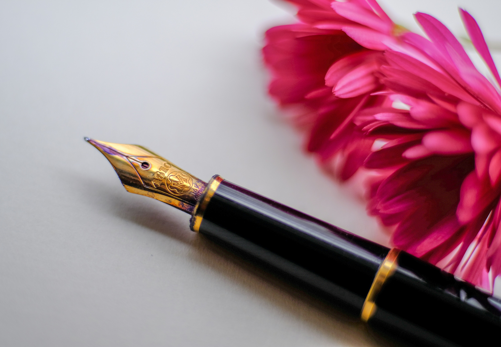
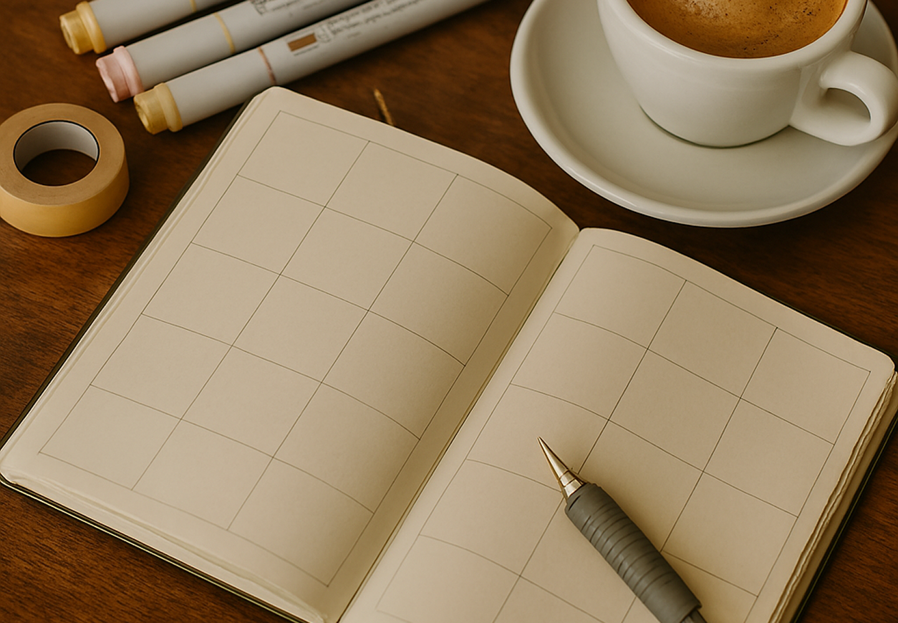
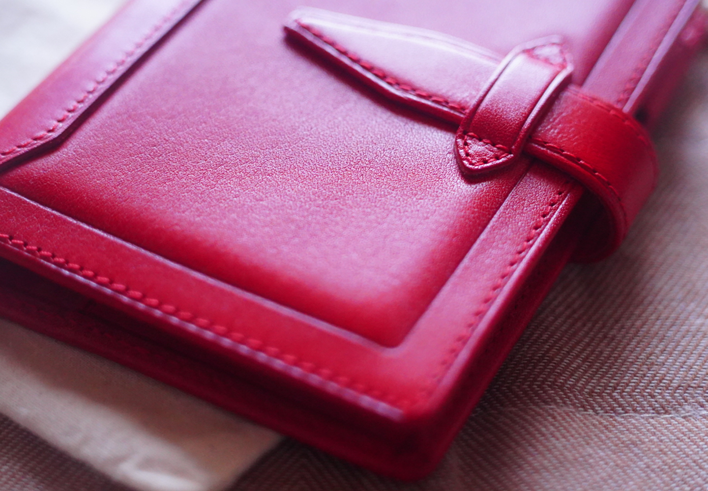
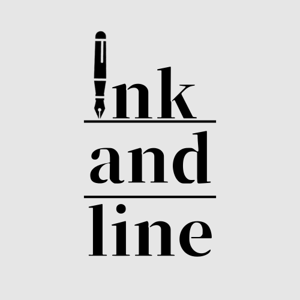

About
ink and lineについて
ink and line は、
書くことを通して思考や感情、日々の時間と向き合うための文房具ブランドです。
万年筆と手帳を中心に、使うほどに手に馴染み、
長く寄り添う道具だけを厳選しています。
書く時間が、あなたの日常を静かに支えます。
Fountain pen
ink and lineのオリジナル万年筆。
ペン先は14K。
柔らかで滑らかな書き心地が、あなたの書く時間を支えます。

Notebook
本文用紙はトモエリバーSを使用。
万年筆インクも滲まない用紙は、あなたの書く時間を邪魔しません。
薄くて軽いから持ち運びにも便利。

Planner
一生モノアイテムを探してる方へ。
使い込む程艶が出るレザーは、まさに一生モノ。
サイズはA5、バイブル、M6(ポケット)、M5(マイクロ5)でとご用意。

Commitment
ink and lineの3つのこだわり
書き心地
紙とペン先の相性にこだわり、長時間でも心地よく書き続けられる道具を選んでいます。
余白
書く量を制限しない設計で、思考や感情が自然に広がる余白を大切にしています。
時間
一時的な流行ではなく、使い続けることで価値が深まるものだけを扱っています。
Contact
ink and line(Study Project)
万年筆、手帳、ノートを中心に取り扱う架空文房具店(ink and line)のLPサイト。
参考デザインを元に、Figmaでの構成設計からHTML / CSSによるコーディングまでを行いました。
ink and lineの世界観を大事に、デザイン設計を行っています。
使用技術
- HTML
- CSS
- JavaScript(basic)
- jQuery
- Figma
- Canva
素材提供
参考デザイン
